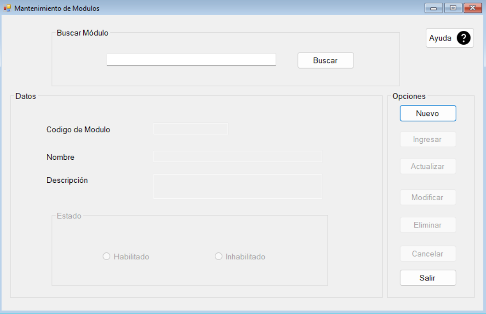
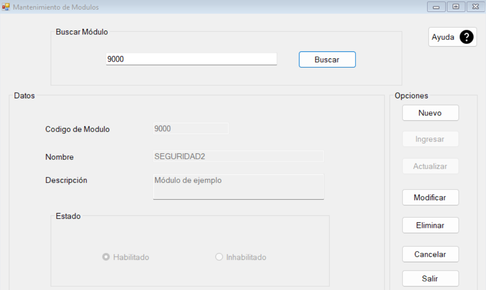
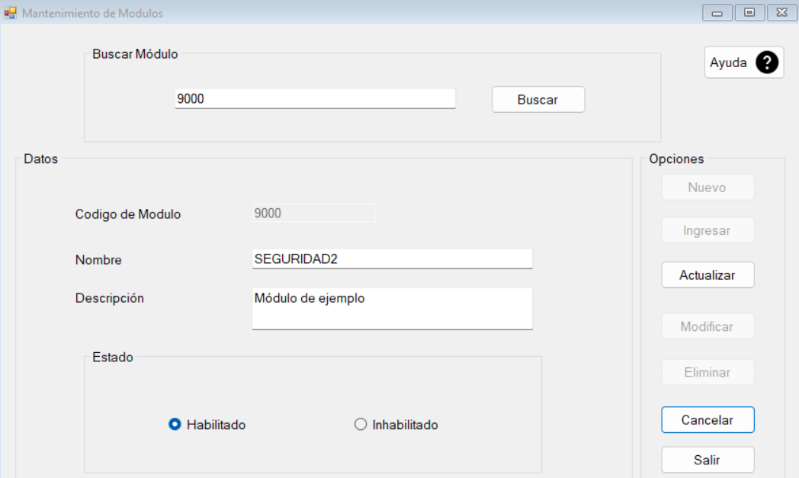
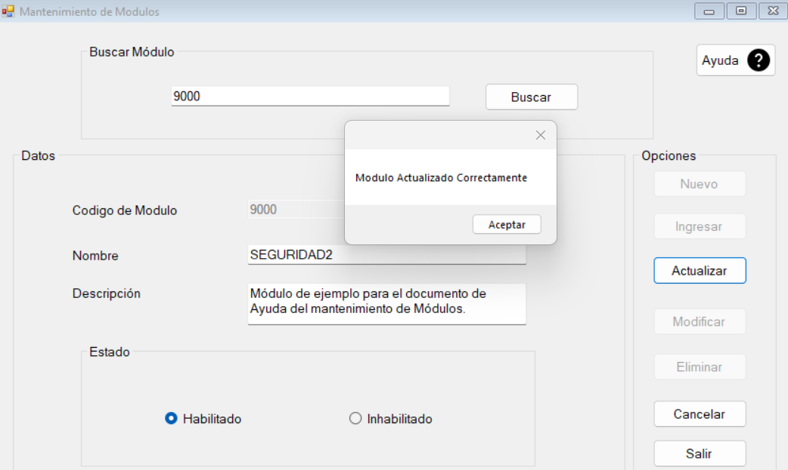
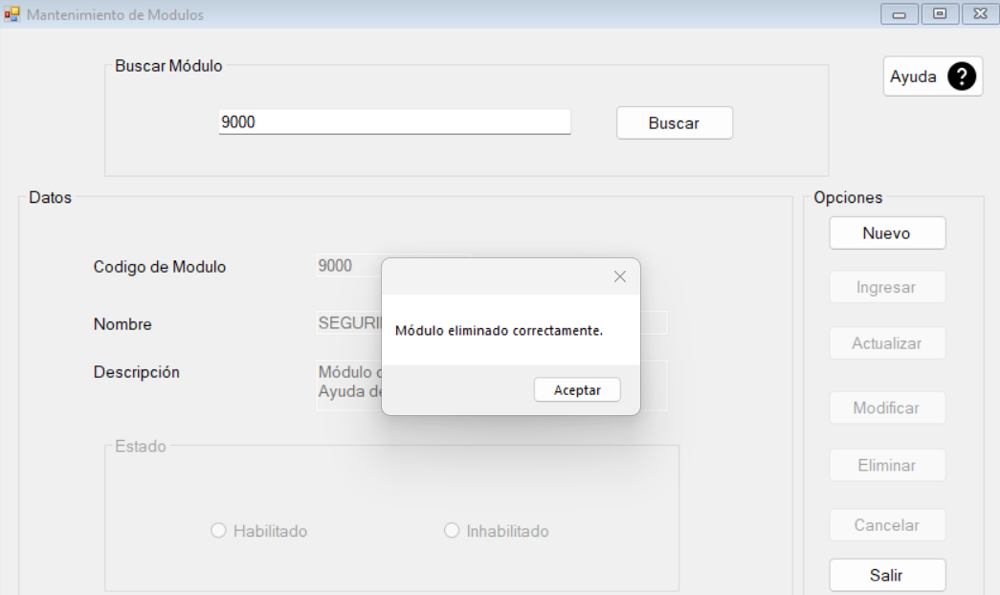

Para entrar al formulario dar clic en la pestaña Mantenimientos, seguido la opción Módulos.

El formulario consta de los botones Nuevo, Ingresar, Actualizar, Modificar, Eliminar, Cancelar, Salir y Buscar.
Para crear un nuevo Módulo, se debe dar clic en el boton Nuevo, luego llenar todos los campos, y por último dar clic en el boton Ingresar, y el módulo se ha creado.

Para modificar un Módulo, lo primero es ingresar el ID del Módulo y dar clic en el botón Buscar. Si el módulo existe se llenarán todos lo campos con los datos del módulo.
Para poder modificar los datos, oprimir el botón Modificar, así se habilitarán los campos que se pueden modificar.
Luego de haber realizado las modificaciones deseadas, dar clic en Actualizar. De esta manera, los datos han sido modificados, y se muestra un mensaje para notificarlo.
Para eliminar un Módulo, lo primero es ingresar el ID del Módulo y dar clic en el botón Buscar. Si el módulo existe se llenarán todos lo campos con los datos del módulo. Después, oprimir el botón Eliminar, de esta forma el módulo ha sido eliminado, y se muestra un mensaje para notificarlo.
El boton cancelar borrará los datos ingresados en el formulario, regresando la ventana al estado original.